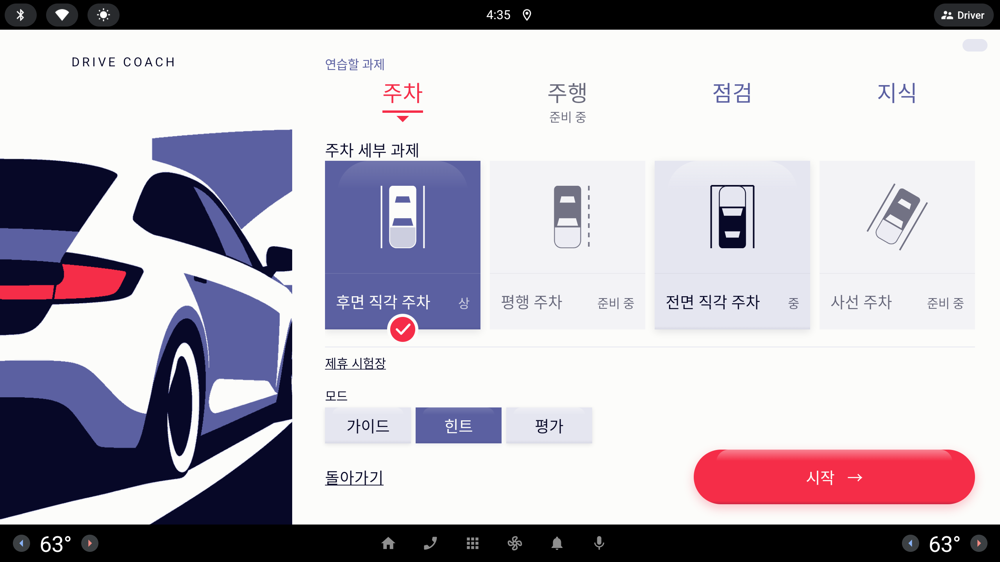
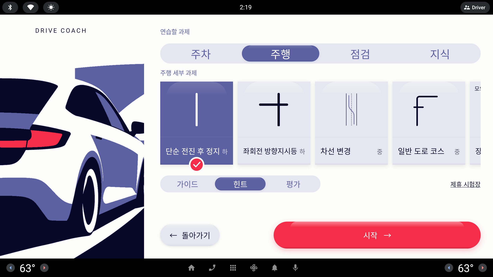

분류 트랙과 그 아래 세부 과제 카드가 지금은 같은 짝(바탕 Lavender · 선택 Periwinkle)을 써서 "큰 분류" 와 "고를 카드" 가 한 층으로 보인다. 라벨은 56 dp 로 오른쪽에서 가장 큰 글자다. 색 전문가 관점에서 명도(밝기) 위계로 트랙을 카드와 다른 층으로 떼고, 라벨은 40–48 dp 로 살짝 줄인다. 카드는 지금 그대로 둔다.
사용자 정정 (원문) 과제 시트 제목 - 아예 잘못 짚었어. 제목 텍스트 자체가 아닌 그 아래 '주차/주행/점검/지식' 의 색과 글자 크기를 말한 거야 + 선택된 알약 및 배경까지 아래 세부 카드랑 살짝 차별된 느낌으로 색 전문가로서 제안을 다시 줘 (5개)
처음 요청 (원문) — 2-sheet-title.html 은 이것을 눈썹 "연습할 과제" 로 잘못 읽었다 #연습할 과제 — 제목 색깔을 조금 차별된 색과 글자 크기를 살짝 줄여서 부탁해 (제안 갯수 5개)
공통 조건 · 과제 시트에는 숫자를 하나도 넣지 않는다(계측 "시트 숫자 0") · 새 색 없음 — Ink·Paper·Periwinkle·Lavender·Signal 과 투명도만 · 눈썹 "연습할 과제"·"주차 세부 과제", 카드 넷(선택 = Periwinkle + 빨간 체크)은 지금 그대로 · 대비는 WCAG 상대 휘도로 계산한 근사값


트랙 Lavender + 선택 Periwinkle, 카드 Lavender + 선택 Periwinkle. 같은 두 색이 위아래로 반복돼 "분류를 고르는 줄" 과 "과제를 고르는 판" 이 구분되지 않는다.
| 트랙 바탕 | Lavender 100% — 카드 바탕과 동일 |
|---|---|
| 트랙 높이 | 104 dp |
| 선택 알약 | Periwinkle · 글자 Paper · SelectedChip 질감 — 선택 카드와 동일 |
| 비선택 글자 | Periwinkle 100% |
| 라벨 크기 · 자간 | 56 dp · 0 |
대비 · 선택 Paper / Periwinkle ≈ 5.6 : 1 · 비선택 Periwinkle / Lavender ≈ 4.7 : 1 · 층 구분 트랙 바탕 / 카드 바탕 = 1 : 1 (같은 색)
트랙을 Ink 로 칠해 화면에서 가장 어두운 층으로 올리고, 선택 알약은 Paper 로 뚫는다 — 아래 밝은 카드와 명도가 정반대.
| 트랙 바탕 | Ink 100% · 안쪽 그림자 Ink 60% |
|---|---|
| 트랙 높이 | 96 dp |
| 선택 알약 | Paper · 글자 Ink · 질감 B 어두운 판(그림자 Ink 60% + 위 하이라이트) |
| 비선택 글자 | Lavender 70% (≈ #A2A3B4 on Ink) |
| 라벨 크기 · 자간 | 44 dp · 0.04 em (어두운 바탕의 밝은 글자는 살짝 벌려야 번짐이 준다) |
대비 · 선택 Ink / Paper ≈ 19 : 1 · 비선택 Lavender 70% / Ink ≈ 7.9 : 1 · 층 구분 트랙 Ink / 카드 Lavender ≈ 15.8 : 1 — 다섯 안 중 가장 큼
트랙 바탕은 Lavender 를 반으로 옅게 물리고, 선택 알약만 Ink 로 — 바탕은 카드보다 한 단계 밝게, 선택은 카드보다 한 단계 어둡게.
| 트랙 바탕 | Lavender 50% (≈ #F0F1F5 on Paper) · 안쪽 그림자 지금 그대로 |
|---|---|
| 트랙 높이 | 96 dp |
| 선택 알약 | Ink · 글자 Paper · 질감 B(SelectedChip 그대로, 색만 교체) |
| 비선택 글자 | Ink 60% (--muted) |
| 라벨 크기 · 자간 | 48 dp · 0 |
대비 · 선택 Paper / Ink ≈ 19 : 1 · 비선택 Ink 60% / 트랙 ≈ 5.0 : 1 · 층 구분 선택 알약 Ink / 선택 카드 Periwinkle ≈ 3.4 : 1, 트랙 / 카드 바탕 ≈ 1.1 : 1 (일부러 약하게)
트랙을 보라기 없는 회색(Ink 6%)으로 바꿔 카드의 푸른 Lavender 와 색온도로 가르고, 선택은 그 홈 위로 떠오른 Paper 알약.
| 트랙 바탕 | Ink 6% (≈ #EDEDED on Paper, 중성 회색) · 안쪽 그림자 Ink 14% — 파인 홈 |
|---|---|
| 트랙 높이 | 96 dp |
| 선택 알약 | Paper · 글자 Periwinkle · 질감 B 그대로(그림자 + 위 하이라이트) |
| 비선택 글자 | Ink 60% (--muted) |
| 라벨 크기 · 자간 | 44 dp · 0 |
대비 · 선택 Periwinkle / Paper ≈ 5.6 : 1 · 비선택 Ink 60% / 트랙 ≈ 5.0 : 1 · 층 구분 알약 Paper / 트랙 ≈ 1.15 : 1 — 대비가 아니라 그림자 높이로 구분
지금 짝을 뒤집는다 — 트랙 전체가 Periwinkle, 선택 알약이 Paper. 카드는 "Lavender 위 Periwinkle 선택", 트랙은 "Periwinkle 위 Paper 선택".
| 트랙 바탕 | Periwinkle 100% · 안쪽 그림자 Ink 28% |
|---|---|
| 트랙 높이 | 96 dp |
| 선택 알약 | Paper · 글자 Periwinkle · 질감 B(그림자 Ink 28% + 위 하이라이트) |
| 비선택 글자 | Paper 75% (≈ #D4D5E4 on Periwinkle) |
| 라벨 크기 · 자간 | 44 dp · 0.02 em |
대비 · 선택 Periwinkle / Paper ≈ 5.6 : 1 · 비선택 Paper 75% / Periwinkle ≈ 4.0 : 1 (큰 글자 기준 3 : 1 통과, 일반 글자 4.5 : 1 미달) · 층 구분 트랙 / 카드 바탕 ≈ 4.7 : 1
트랙의 채움을 걷어내 Paper 위 글자 줄로 만들고, 선택은 Ink 글자 + 아래 Signal 막대 — 채운 면(카드)과 선(분류)으로 층을 가른다.
| 트랙 바탕 | Paper(채움 없음) · 아래 2 dp Lavender 기준선 |
|---|---|
| 트랙 높이 | 88 dp |
| 선택 표시 | 알약 대신 6 dp 둥근 막대(Signal, 칸 폭의 36%) · 글자 Ink · 질감 없음(평면) |
| 비선택 글자 | Periwinkle 100% |
| 라벨 크기 · 자간 | 40 dp · 0.04 em |
대비 · 선택 Ink / Paper ≈ 19 : 1 · 비선택 Periwinkle / Paper ≈ 5.6 : 1 · Signal 막대 / Paper ≈ 3.8 : 1 (비텍스트 3 : 1 통과)
1/3 축척. 모두 주차 선택. 카드 줄은 지금 그대로 하나만 두어 트랙과의 층 차이만 보이게.
트랙 바탕(가장 밝음) → 카드(중간) → 선택 알약(가장 어두움, 19 : 1)으로 명도 사다리가 정확히 세 칸이 되어 "선택이 둘" 문제가 풀리고, 라운드 21 의 알약 모양·질감은 그대로 둔 채 값 네 개만 바꾼다. 층을 더 세게 가르고 싶으면 A 밤이 다음 후보.